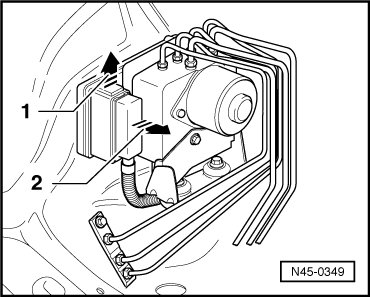
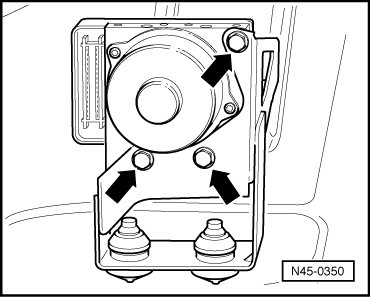
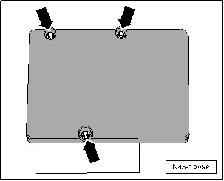
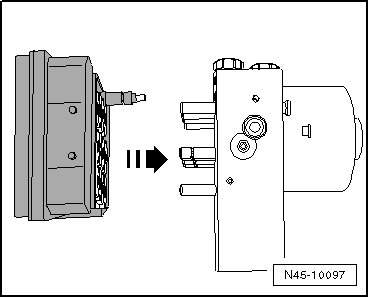
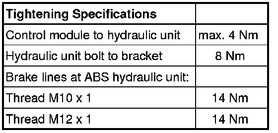

Anti Lock Brake System Hydraulic Control Unit
Anti Lock Brake System Hydraulic Control Unit
Special tools, testers and auxiliary items required
• Torque wrench (VAG 1410)
• Brake pedal actuator (VAG 1869/2)
• Sealing plug repair set (1 H0 698 311 A)
After separating the control module from the hydraulic unit, always install transport protection on the hydraulic unit for the valve domes.
Warranties will not be granted for hydraulic units without transport protection.
1 Transport protection for valve domes (foam)
2 Sealing plug M10
3 Sealing plug M12
Component location:
The control module is bolted to the hydraulic unit and is located on the right in the plenum chamber.
CAUTION!
Do not bend the brake lines near the hydraulic unit.
Control Module and Hydraulic Unit, Removing
- Note or request radio code on vehicles with coded radio if necessary.
- Disconnect battery..
- Remove plenum chamber cover.
- Remove the engine control module.
- Remove this ground cable behind engine control module bracket from body.
- Unclip cable harness and lay aside
- Remove engine control module bracket.
- Remove intake housing.
- Disengage connector from control module in direction of arrow - 1 - and disconnect (- arrow 2 -).

- Attach bleeder hose of bleeder bottle to left front brake caliper bleeder valve and open bleeder valve.
- Install brake pedal loading device (VAG 1869/2).
- Close front left bleeder valve.
- Place sufficient lint free cloths under the control module and hydraulic unit.
Make sure that brake fluid does not come in contact with the terminals.
- Identify brake lines and remove at hydraulic unit and intermediate piece.
- Seal brake lines and threaded holes with sealing plugs (1H0 698 311 A).
- Remove hydraulic unit bolts- arrows - from bracket.

- Remove hydraulic unit upward together with control module.
Control Module, Removing from Hydraulic Unit
- Place hydraulic unit with control module on a clean, level surface.
- Remove external Torx bolts - arrows -.

- Pull control module off from hydraulic unit - arrow - without tilting.

CAUTION!
• No moisture or particles of dirt must penetrate in interior of control module.
• The hydraulic pump must not be separated from the hydraulic unit.
- Cover control module magnetic coils with a lint free cloth.
After separating the control module and hydraulic unit, use transport protection for valve body.
New Control Module, Installing
CAUTION!
Excessive shaking (e.g. dropping, impact) may destroy the control module. Control module must then no longer be used.
• Surface must be cleaned before assembling.
- Place control module without tilting it on to hydraulic unit.
- Bolt hydraulic unit and control module with new inner Torx bolts supplied.
• A new control module may be installed a max. of two times to a used hydraulic unit, to ensure that the elastic gasket seals sufficiently.
• A control module which was once in driving operation must not be installed a second time.
Control Module and Hydraulic Unit, Installing
• Do not remove sealing plugs at new hydraulic unit until the corresponding brake line is about to be installed.
• If the sealing plugs are removed too early, brake fluid can escape. If this occurs, unit may not be sufficiently filled or adequately bled.
- Installation is performed in the reverse order of removal.
- Remove brake pedal loading device (VAG 1869/2).
- Bleed the brake system. Refer to --> [ Brake System Bleeding General Information ] Brake System Bleeding General Information.
- Enter radio code.
- Perform ABS control module (J104) coding using the in "Guided Fault Finding".
- After replacing the ABS control module (J104), the basic setting must also be performed.
